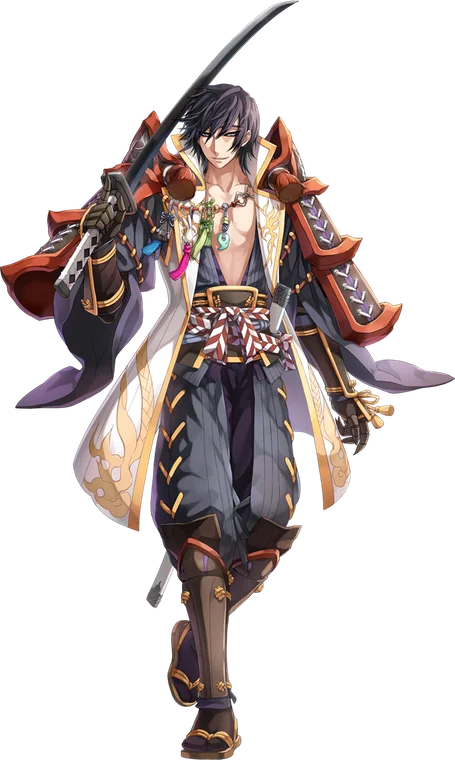

Third tier
Kagemusha
Kagemusha, once known as Kagerou and Oboro, is the primary advancement option for Ninjas. After spending a hundred levels perfecting their use of physical, ranged, and magical combat styles, the Kagemusha continue along the same path, adding explosive power to each style of ninjutsu.
Once again, the skill tree of the Kagemusha is split into three branches, Melee, Ranged, and Magic. Each of these branches builds on the foundation of a utility skill , Mikiri, Shifting Shadow, and Serenity respectively , before gaining access to more of the familiar combat tricks that Ninjas are already familiar with.
However, these new skills are distinctively different from the first job skills available to Ninjas. While they take advantage of the same three Arts buffs that original Ninja skills rely on, they never generate them. This leaves the Kagemusha with two possible applications of these new skills: they can either use them as seems like the most obvious intention, as finishers to add a powerful capstone to their previously endlessly looping Ninja combos, or they can take advantage of a new trait that each of the new skills possesses.
While Ninja-level skills only ever benefited from Arts coming from outside their own tree, that is not the case for the Kagemusha. Each of the new skills also gains a benefit if the user is only under that skill's own Art. For example, the new skill Fulminant Steel gains a bonus as usual for the user being under Second Art or Third Art, coming from Ranged and Magical skills respectively, and gains a stronger bonus if under both, but if they are under only First Art, unique to Melee skills, it gains a different, unique bonus. This allows the Kagemusha to focus their training on perfecting a single branch of their skill tree, rather than diversifying so much as was required in their previous job.

Where it sits
Skill list
Skills
Grouped the way the tree is grouped. Names, types and level caps come from the player wiki, so they match what you see in game.
Melee Skills4 skills
-
MikiriSupportiveLv 10
Perfectly evades the next skill; a successful read buffs Str and refreshes Crushing Steel.
Perfectly reading the incoming attack, the user evades timely, avoiding all damage and putting themselves in an optimal position to counterattack. For a brief time, the next skill attack against the user misses, dealing no damage. If an attack is successfully evaded, the user gains a bonus to Strength for a short time, and the Cooldown of Crushing Steel is refreshed.
Works withCrushing Steel
-
Fulminant SteelDaggerLv 5
Lightning-fast strike; alone under First Art, refreshes the Ninja dagger skills.
The user delivers a lightning fast strike, dealing physical damage to a single target. If the user is in Second Art or Third Art, this attack gains bonus Crit Rate. If the user is in both, it's guaranteed to Crit, both Arts end, and the next skill the user casts refreshes its Cooldown instantly. If the user is in the First Art Status and does not have either Second or Third Arts active, Flashing Steel and Soaring Steel have their cooldowns immediately refreshed and the active Cooldown of Mikiri is slightly reduced.
Each level of this skill passively increases the damage of Flashing Steel.
Works withMikiri
-
Ravenous SteelDaggerLv 5
Slashing AoE that can heal per enemy struck.
The user lashes out around them, dealing heavy physical damage to all enemies in the area around them. If the user is in the Second Art or Third Art Status, this attack gains bonus Crit Rate. If the user is in both, it's guaranteed to Crit, both Arts end, and the user heals for a small amount of HP for each target struck. If the user is in the First Art Status and does not have either Second or Third Arts active, Flashing Steel and Soaring Steel have their cooldowns immediately refreshed and the active Cooldown of Mikiri is slightly reduced.
Each level of this skill passively increases the damage of Soaring Steel.
Works withMikiri
-
Crushing SteelDaggerLv 10
Massive splash blow that can Stun everything it hits.
The user deals a massive blow to the targeted enemy, inflicting heavy damage to them and all enemies in the area around them. If the user is in the Second Art or Third Art Status, this attack gains bonus Crit Rate. If the user is in both, it's guaranteed to Crit, both Arts end, and all enemies struck are inflicted with the Stun status. If the user is in the First Art Status and does not have either Second Art or Third Art active, Flashing Steel, Soaring Steel, Fulminant Steel, and Ravenous Steel all have their cooldowns immediately refreshed, and the First Art Status has its duration refreshed.
Each level in this skill passively increases the damage of Flashing Steel and Soaring Steel.
Works withFulminant SteelRavenous Steel
Ranged Skills4 skills
-
Shifting ShadowThrowingLv 10
Dex buff that teleports the user back to the cast location when it ends.
The user marks the ground beneath them, preparing for movement later. Memorizes the user's current location, then increases the user's Dexterity for a short duration. When the duration ends, the user is instantly teleported to the memorized location, ignoring any intervening terrain or obstacles. Casting the skill again while the skill is active will end the status early, allowing the user to trigger the teleport on demand.
-
Whirling ShadowThrowingLv 5
Projectile volley around the user; effects vary by Throwing Weapon.
The user throws a volley of projectiles at all enemies in the area immediately surrounding them. This skill gains different properties based on the equipped Throwing Weapon.
Works withShifting Shadow
-
Fluttering ShadowThrowingLv 5
Targeted projectile volley; effects vary by Throwing Weapon.
The user throws a volley of projectiles at the targeted enemy, striking them and all enemies immediately surrounding them for physical damage. This skill gains different properties based on the equipped Throwing Weapon.
Works withShifting Shadow
-
Dragon's ShadowThrowingLv 10
Explosive projectile that debuffs or resets the Ranged kit.
The user throws an explosive projectile at the targeted enemy which immediately detonates to deal massive damage to all enemies in the area. Inflicts ranged physical damage on all enemies around the target. The damage of this skill is based on the user's Dex, and is further increased by their Str and Int.
If the user is under the First or Third Art Status, this skill inflicts the Vulnerable and Breach status. If the user is under both, it additionally inflicts the Stun status, both Arts end, and Shifting Shadow's duration is increased for each target struck. If the user is under only Second Art, Echoing Shadow, Departing Shadow, Whirling Shadow, and Fluttering Shadow have their cooldowns refreshed.
The user's Throwing Weapon does not affect the damage or behavior of this skill.
Magic Skills4 skills
-
SerenityElite Ninja ArtLv 10
Long buff granting Int and Fixed Cast Time reduction.
The user focuses themselves, purifying their heart and mind. Grants the user a bonus to Intelligence and a reduction in all Fixed Cast Times for the duration.
-
Falling StarElite Ninja ArtLv 5
Fire meteor; can inflict Severe Burning or Water weakness.
The user summons a blazing meteor to strike the targeted enemy, dealing Fire property Magic damage to them and all enemies in the area around them.
If the user is under the First or Second Art Status, this skill's Fixed Cast Time is removed. If the user is under both, the entire cast time is removed, both Arts End, and enemies struck receive the Intense Burning status.
If the user is under only Third Art, enemies struck become vulnerable to Water property damage, then Basic and Advanced Ninja Arts have their Cooldowns refreshed.
-
Monsoon EdgeElite Ninja ArtLv 5
Water blast; can inflict Chill or Wind weakness.
The user unleashes a blast of freezing water, lashing out at all enemies in the area around them. Inflicts Water property Magic damage to all enemies in the area.
If the user is under the First or Second Art Status, this skill's Fixed Cast Time is removed. If the user is under both, the entire cast time is removed, both Arts End, and enemies struck receive the Chilled status.
If the user is under only Third Art, enemies struck become vulnerable to Wind property damage, then Basic and Advanced Ninja Arts have their Cooldowns refreshed.
-
Giant's FootfallElite Ninja ArtLv 5
Earth tremor; can inflict Vulnerable or Fire weakness.
Shakes the earth with a tremendous impact, inflicting Earth property Magic damage to all enemies in the affected area.
If the user is under the First or Second Art Status, this skill's Fixed Cast Time is removed. If the user is under both, the entire cast time is removed, both Arts End, and enemies struck receive the Vulnerable status.
If the user is under only Third Art, enemies struck become vulnerable to Fire property damage, then Basic and Advanced Ninja Arts have their Cooldowns refreshed.
From the players
See it played
Come find out what changed
Make an account, grab the client, and come and see what changed.